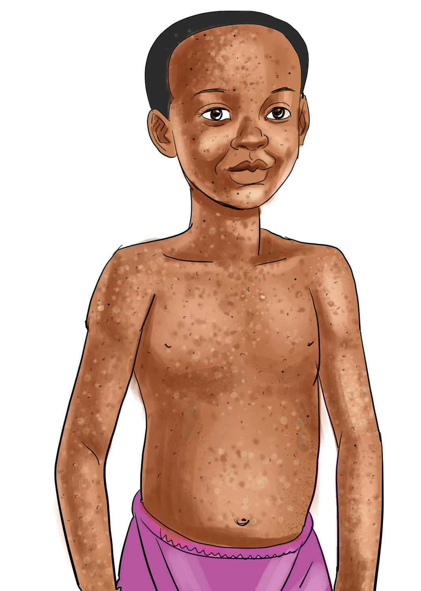

Tetekuwanga
Tetekuwanga ni ugonjwa unaosababishwa na virusi. Ugonjwa huu huambukizwa kwa njia ya hewa au kugusana mwili na mgonjwa. Pia, huweza kuambukizwa kwa kushirikiana nguo na kulala kitanda kimoja na mgonjwa. Vimelea vya ugonjwa huweza kusambaa mgonjwa anapopiga chafya au kukohoa.
Dalili za tetekuwanga
Dalili za tetekuwanga ni homa kali na kuumwa kichwa. Vilevile, hutokwa na vipele vinavyowasha ambavyo hubadilika kuwa malengelenge yanayotoa usaha na majimaji. Wakati mwingine ugonjwa huu huacha makovu ya kudumu kwenye ngozi. Kielelezo namba 5 kinaonesha mgonjwa mwenye malengelenge mwilini kutokana na ugonjwa wa tetekuwanga.

Namna ya kuzuia tetekuwanga
Tetekuwanga huweza kudhibitiwa kwa kupatiwa dawa. Dawa hiyo itolewe chini ya uangalizi maalumu hospitalini au nyumbani. Ni vizuri kutochangia mavazi na kuzingatia usafi wa mwili na mavazi kwa mgonjwa. Dawa ya kuua vimelea vya magonjwa itumike wakati wa kusafisha mwili na kufua nguo.